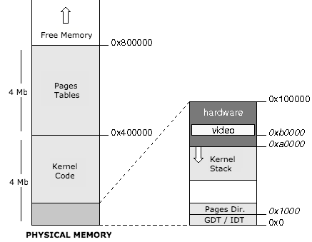
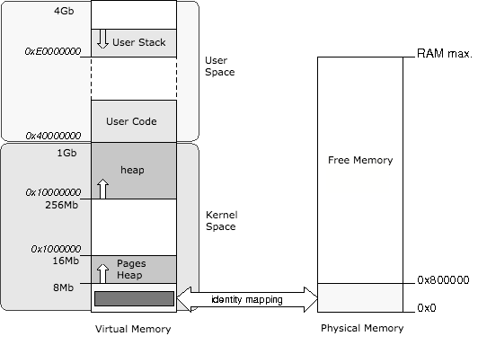

Memory management: physical and virtual
The kernel knows the size of the physical memory available thanks to GRUB.
In our implementation, the first 8 megabytes of physical memory will be reserved for use by the kernel and will contain:
- The kernel
- GDT, IDT et TSS
- Kernel Stack
- Some space reserved to hardware (video memory, ...)
- Page directory and pages table for the kernel
The rest of the physical memory is freely available to the kernel and applications.

Virtual Memory Mapping
The address space between the beginning of memory and 0x40000000 address is the kernel space, while the space between the address 0x40000000 and the end of the memory corresponds to user space:

The kernel space in virtual memory, which is using 1Gb of virtual memory, is common to all tasks (kernel and user).
This is implemented by pointing the first 256 entries of the task page directory to the kernel page directory (In vmm.cc):
/*
* Kernel Space. v_addr < USER_OFFSET are addressed by the kernel pages table
*/
for (i=0; i<256; i++)
pdir[i] = pd0[i];